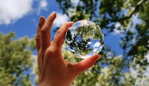
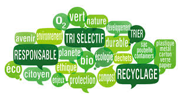

Nos projets
Le cuire de Kamboucha


La culture in vivo


La culture in vitro


Le compost


Le développement durable aspire à une croissance équilibrée, intégrant l'économie, le social et l'environnement. Il cherche à satisfaire les besoins actuels tout en préservant les ressources pour les générations futures. C'est une approche holistique favorisant une prospérité économique durable, l'équité sociale et la protection de l'écosystème. En misant sur l'efficacité et l'équité, le développement durable vise à créer un équilibre harmonieux pour assurer un avenir viable.
 